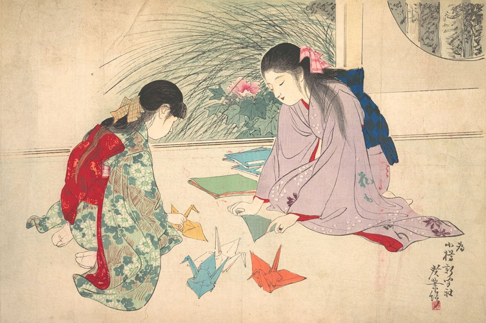
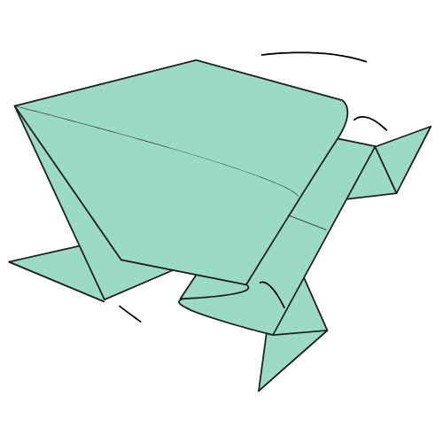

Domine os Fundamentos
Antes de criar peças incríveis, é preciso entender a base. Aprenda a ler os diagramas, conheça a diferença entre dobra montanha e vale, e construa uma fundação sólida.
Aprender o básico
Uma Tradição Milenar
Do uso restrito em rituais xintoístas no Japão antigo à democratização com a popularização do papel, o origami evoluiu de um luxo cerimonial para uma arte global.
Ler a História CompletaExplore o Universo do Origami
Coloque o papel na mesa e dê vida às suas primeiras criações. Escolha um modelo e siga o passo a passo interativo.

Sapo de Papel
Um clássico interativo. Pressione a parte traseira para fazê-lo saltar!
Flor de Lótus
Uma bela flor de papel ideal para decoração. Ótimo ponto de partida.
Barco Tradicional
O famoso barquinho. Muito simples de fazer e perfeito para ensinar crianças.
Desafie sua Mente no Memorigami
Pratique seu foco e aprenda a identificar visualmente os padrões de dobra de forma divertida no nosso jogo da memória exclusivo.
Jogar Agora